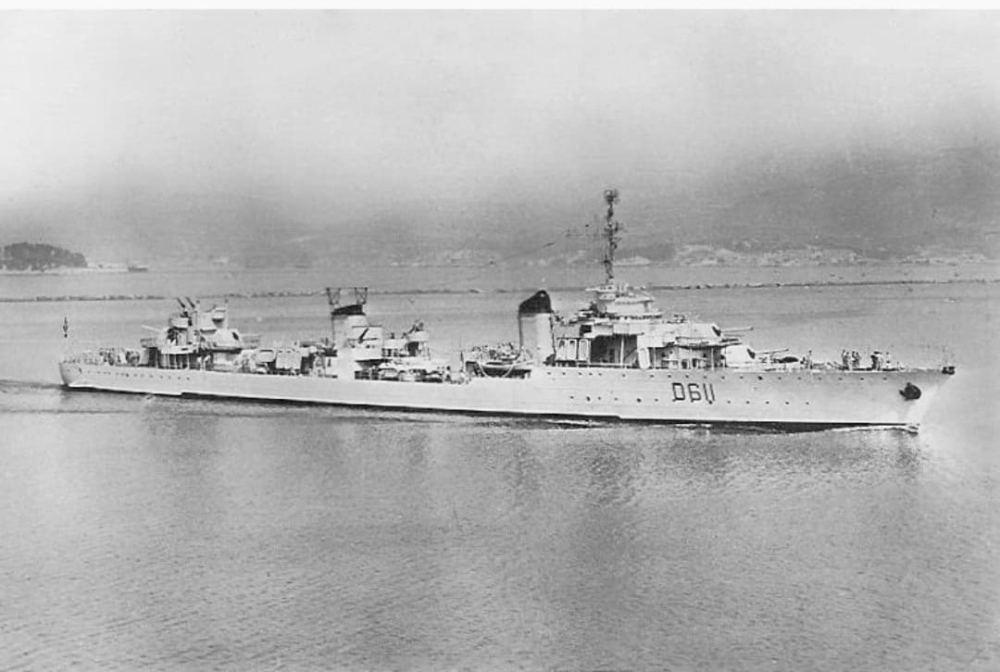

Le contre‑torpilleur Le Terrible est le navire français le plus célèbre de sa catégorie. Membre de la classe Le Fantasque, il est devenu une légende en établissant un record mondial de vitesse : 45 nœuds (≈ 83 km/h), jamais égalé par un destroyer classique.
Rapide, puissant, et redouté, il a servi dans de nombreuses opérations durant la Seconde Guerre mondiale, notamment au sein des Forces navales françaises libres.

En 1939, Le Terrible est l’un des navires les plus rapides du monde. Il participe à des missions d’escorte, de raids rapides et d’opérations nocturnes. Après 1942, il rejoint les Forces navales françaises libres et sert activement en Méditerranée et dans l’Atlantique.
Sa vitesse exceptionnelle lui permet d’intercepter, de fuir ou de surprendre l’ennemi comme aucun autre contre‑torpilleur français.
Page du Musée HOP WW2 – Section navires français